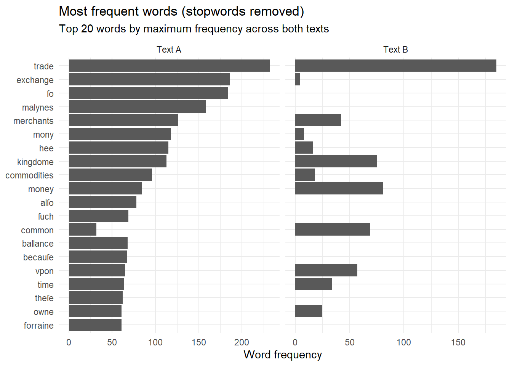

library(readr)
library(dplyr)
library(tidyr)
library(stringr)
library(tidytext)
library(ggplot2)
library(forcats)
library(tibble)
library(scales)Week 02: Basics
Week’s Goals:
This week, we compare two early modern economic texts by examining word frequencies and bigrams. Our two texts are by Edward Misselden, one of the major Early Modern mercantilists whose work we will be analyzing. The goal is for you to become familiar with how to start implementing NLP workflows in RStudio. The two texts are available on Canvas, under files in the folder named Text Files (note: there are other files in there which we will use later on in the term).
Note: this will be the standard set up going forward. Sample code will be here and files will be on Canvas, unless otherwise specified.
- Our guiding questions will be: how does Misselden’s language about trade change between 1622 and 1623? This is obviously an artificially simplistic question at this stage, but it will help us explore some useful NLP methods. To begin answering this question, we will compare word frequency between two of his works: Free Trade (London, 1622) and The Circle of Commerce (London, 1623). We will also look at bigram frequencies as a preview of the longer discussion of N-grams next week.
What you need:
I am assuming that you will be working inside an RStudio Project (recommended). We will read two plain-text files, tidy the tokens/bigrams, and compare frequency patterns. You will need:
- A project folder that contains all of your files (try to have a consistent folder organization throughout the semester).
- The plain-text files on Canvas.
A word of warning about training wheels:
Because this class doesn’t assume familiarity with R, I am giving extended explanations of the code during this first session (including tips on how to set up your directories and extensive links to R documentation). As the semester proceeds, I will assume that you are gaining confidence and familiarity with R and Rstudio, and the training wheels will slowly come off. Take advantage of the slower pace at the start of the semester to set yourself up for the harder weeks to come!
This week I will also show the results of each step of code by printing after each step. This will make (a bit more) explicit how each chunk of code modifies our data. You will be expected to do this more and more on your own starting next week.
Step-by-step: from raw texts to comparison plots
Setup
At the beginning of each R file, you will want to call all the packages needed. This will look like:
I am storing my text files in a directory named texts/ inside my project: I strongly suggest doing the same to make your life easier.
The next section of code demonstrates how to read the files and to organize them into a type of dataframe that is well suited for Tidy work: a tibble. For this week, I am using generic “file_a” and “file_b” names to simplify the rather complex original file names. We will discuss the naming conventions of these files as well as how to deal with XML files (the original format of Misselden’s texts) in the next few weeks, but for now, I want you to focus on getting them into the appropriate format for analysis.
# You will need the correct file paths if you don't follow my naming conventions:
file_a <- "texts/A07594__Circle_of_Commerce.txt"
file_b <- "texts/B14801__Free_Trade.txt"
# Read the raw text files into R
text_a <- read_file(file_a)
text_b <- read_file(file_b)
# Combine into a tibble for tidytext workflows
texts <- tibble(
doc_title = c("Text A", "Text B"),
text = c(text_a, text_b)
)
texts# A tibble: 2 × 2
doc_title text
<chr> <chr>
1 Text A THE CIRCLE OF COMMERCE. The Prooeme. HERODOTVS in his CLIO, reporte…
2 Text B CAP. I. The Causes of the want of Money in England. IT hauing pleas…As you can see from the .txt files, these are Early Modern texts with (at least some) of the original orthography. In reality, these have already been partially cleaned as I have accessed them from EarlyPrint (we will discuss different sources of texts, historical and otherwise) as you start thinking about your term project.
Tokenization, stopwords, and counting words:
We will turn each text into a table of one word per row, this is the tokenization process in Tidy. Tokens are the basic unit of text that we are working on and the process of tokenization “breaks down” the text into these units for computational analysis. For right now, we are going to consider each word to be a token, but we could break up the text into characters or parts of words if needed. We will then we remove stopwords (words like “the” or “and” that are not useful for this analysis) so that the remaining words are more meaningful for comparison.
We will do this in two steps:
- Stopwords: we will create an “all stopwords” list by combining tidytext’s built-in list with our own, corpus-specific, list. Our list is going to be a one-column
tibbleto match the format of the built-in stopwords:
# Start with tidytext's built-in stopword list
data("stop_words")
# Add our own project-specific stopwords (you can, and will, expand this list later)
custom_stopwords <- tibble(
word = c(
"vnto", "haue", "doo", "hath", "bee", "ye", "thee"
)
)
all_stopwords <- bind_rows(stop_words, custom_stopwords) %>%
distinct(word)
all_stopwords %>% slice(1:10)# A tibble: 10 × 1
word
<chr>
1 a
2 a's
3 able
4 about
5 above
6 according
7 accordingly
8 across
9 actually
10 after Next we are going to create a function that tokenizes the texts, removes both standard and custom stopwords, and then counts which words appear most frequently in each document. As you look over this section, you will want to become familiar with the pipe in R (%>%).
textsis atibblewhere each row corresponds to a document;unnest_tokens(word, text): splits thetextcolumn into individual word tokens, creates a new column calledword, and expands the tibble so each row is now one word occurrencemutate: here we are normalizing all words to lower case. This is a research decision: I want to count words like “Money,” “MONEY,” and “money” as the same token, so that I can ask how often the texts talk about “money” regardless of capitalization. Note: mutate is part of the dplyr package.anti_join: this is where we remove the stopwords we defined earlier and keeps only the tokens that should (we think!) give us the information we want. Look over the information onjoinshere and make sure that you understand what it’s doing and understand why the tibble format is important! We will be usinganti_joinfrequently.Finally we count.
word_counts <- texts %>%
unnest_tokens(word, text) %>%
mutate(word = str_to_lower(word)) %>%
anti_join(all_stopwords, by = "word") %>%
count(doc_title, word, sort = TRUE)
word_counts# A tibble: 7,438 × 3
doc_title word n
<chr> <chr> <int>
1 Text A trade 233
2 Text A exchange 186
3 Text B trade 185
4 Text A ſo 184
5 Text A malynes 158
6 Text A merchants 126
7 Text A mony 118
8 Text A hee 115
9 Text A kingdome 113
10 Text A commodities 96
# ℹ 7,428 more rowsNote: unnest_tokes(word, text) removes punctuation and lowercases automatically. You can a try couple of options to solve this issue. The first is to change a couple of parameters in the function: unnest_tokens(word, text, strip_punct = FALSE) to keep the punctuation and unnest_tokens(word, text, to_lower = FALSE) to keep upper cases. What if you want to keep only certain symbols and types of punctuation? We will discuss this at the beginning of Week 3.
Comparing word frequencies across texts
Let’s compare how individual words differ across texts after stopword removal through a first visualization. To keep the visualization readable, we focus on the top 20 most frequent words overall. For now, we won’t get into all the details of the visualization code; we will focus on the main components.
The goal of this visualization is a side-by-side comparison plot showing the top 20 most frequent words across the texts with one facet per text. Note: these are the same words for both texts. This means that we are creating a direct comparison of how Misselden uses the most frequent terms.
We start by putting
word_countin the correct format withpivot_wider: each word will have a column for each document’s count.values_fill = 0: if a word never appears in a text, it gets a 0 instead ofNA.Next, we rank words based on this criterion: for each word, look at how often it appears in Text A and how often it appears in Text B, and keep the largest count.
This is what is achieved by computing the row-wise maximum with
pmaxand then defining the vector:max_n = pmax(TextA, TextB).mutate()adds a column toword_comparison_tbl(the wide version ofword_countwe are defining in this block) based on how we just definedmax_n(that is: it takes the vector and attaches it as a column to the tibble).arrange(desc(max_n)sorts the words from most to least frequent based onmax_n.
Stop and regroup:
I have just implicitly (sneakily) introduced some new things and you might find it helpful to take a look at this introduction to data structures. We will reinforce this topic as we go so don’t panic if this is new to you!
Back to the code:
We have produced a wide, ranked comparison table. We want to turn into a tidy table that can easily be plotted. To do this we need three main steps:
select the top 20 words to plot (based on our ranking criterion above). We will do this with
slice_head(n = plot_n_words), which takes the firstplot_n_wordsofword_comparison_tbl.reshape from wide to long to please
ggplot: we will talk about ggplot more in the future, but, for now, we can treat it as a blackbox that produces nice visualizations.order the words for the plot with
mutate(word = fct_reorder(word, n, .fun = max)). Note: here too, I am asking you to take this as a blackbox for now. What this step is trying to solve is the problem (for us) that a character vector has no inherent order.
Finally we plot!
plot_n_words <- 20 # you can change this as needed
# Select the most frequent words overall
word_comparison_tbl <- word_counts %>%
pivot_wider(
names_from = doc_title,
values_from = n,
values_fill = 0
) %>%
mutate(max_n = pmax(`Text A`, `Text B`)) %>%
arrange(desc(max_n))
word_plot_data <- word_comparison_tbl %>%
slice_head(n = plot_n_words) %>%
pivot_longer(
cols = c(`Text A`, `Text B`),
names_to = "doc_title",
values_to = "n"
) %>%
mutate(word = fct_reorder(word, n, .fun = max))
ggplot(word_plot_data, aes(x = n, y = word)) + #black magic happens thanks to ggplot
geom_col() +
facet_wrap(~ doc_title, scales = "free_x") +
labs(
title = "Most frequent words (stopwords removed)",
subtitle = paste0(
"Top ", plot_n_words,
" words by maximum frequency across both texts"
),
x = "Word frequency",
y = NULL
) +
theme_minimal()
Bigrams: starting to think about context
Single-word frequencies tell us which terms are common, but they don’t tell us about the context of these words. Our next step will be to try to get a first, basic understanding of how words in our texts fit together. Bigrams allow us to see which words appear together, capturing short phrases and recurring ideas. This is also our first step towards exploring formulaic language,and discursive patterns, rather than just isolated vocabulary.
- You should be able to understand the syntax of this first step (make sure that you do!):
bigrams <- texts %>%
unnest_tokens(bigram, text, token = "ngrams", n = 2)
bigrams# A tibble: 53,816 × 2
doc_title bigram
<chr> <chr>
1 Text A the circle
2 Text A circle of
3 Text A of commerce
4 Text A commerce the
5 Text A the prooeme
6 Text A prooeme herodotvs
7 Text A herodotvs in
8 Text A in his
9 Text A his clio
10 Text A clio reportes
# ℹ 53,806 more rowsCurrently, each bigram is stored as a single string. We want to remove stopwords (using the custom list we created earlier). In order to do that, we need to be able to inspect each word separately in the bigram. separate() does just that! It takes the bigram column and splits each string at the space character. It then creates two new columns: “word1” and “word2.”
bigrams_separated <- bigrams %>%
separate(bigram, into = c("word1", "word2"), sep = " ")
bigrams_separated# A tibble: 53,816 × 3
doc_title word1 word2
<chr> <chr> <chr>
1 Text A the circle
2 Text A circle of
3 Text A of commerce
4 Text A commerce the
5 Text A the prooeme
6 Text A prooeme herodotvs
7 Text A herodotvs in
8 Text A in his
9 Text A his clio
10 Text A clio reportes
# ℹ 53,806 more rows- Now we can remove
all_stopwords
bigrams_filtered <- bigrams_separated %>%
filter(
!word1 %in% all_stopwords$word,
!word2 %in% all_stopwords$word
)
bigrams_filtered# A tibble: 7,625 × 3
doc_title word1 word2
<chr> <chr> <chr>
1 Text A prooeme herodotvs
2 Text A clio reportes
3 Text A croesvs king
4 Text A ſonne borne
5 Text A borne dumbe
6 Text A king himſelf
7 Text A imminent danger
8 Text A certaine perſian
9 Text A perſian ready
10 Text A lay violent
# ℹ 7,615 more rowsWe remove bigrams where either word is a stopword, since phrases like “of the” or “and the” are rarely meaningful analytically.
bigram_counts <- bigrams_filtered %>%
count(doc_title, word1, word2, sort = TRUE)
bigram_counts# A tibble: 6,447 × 4
doc_title word1 word2 n
<chr> <chr> <chr> <int>
1 Text B common wealth 48
2 Text A merchants adventurers 35
3 Text B latin alphabet 34
4 Text A low countries 21
5 Text A free trade 20
6 Text B east india 20
7 Text A latin alphabet 17
8 Text A natiue commodities 17
9 Text A forraine commodities 16
10 Text A common wealth 14
# ℹ 6,437 more rowsNow that we removed the stopwords, we can use unite to put the bigrams back together:
bigram_counts <- bigram_counts %>%
unite(bigram, word1, word2, sep = " ")
bigram_counts# A tibble: 6,447 × 3
doc_title bigram n
<chr> <chr> <int>
1 Text B common wealth 48
2 Text A merchants adventurers 35
3 Text B latin alphabet 34
4 Text A low countries 21
5 Text A free trade 20
6 Text B east india 20
7 Text A latin alphabet 17
8 Text A natiue commodities 17
9 Text A forraine commodities 16
10 Text A common wealth 14
# ℹ 6,437 more rowsImportant conceptual point: why are we creating bigrams first, cleaning them from stopwords, and then gluing them back together? Shouldn’t we just tokenize the text into individual words, clean the stopwords, and then find the bigrams?
Let’s test this out with a phrase such as: “strong economy of international trade.” If we do bigrams first, we get: “strong economy”, “economy of”, “of international”, “international trade.” Removing stopwords will give us: “strong economy”, “international trade” (make sure this makes sense to you).
If we cleaned the stopwords first, the phrase would turn into: “strong economy international trade.” The bigrams would then be: “strong economy”, “economy international”, “international trade.” We now have an “extra” bigram, “economy international” (can you see why?).
NB: there will be situations where the second method (clean first, bigrams second) may be the better option! Think of the phrase: “the state of the art.” The clean first method will give us “state art,” while our method (bigrams first, clean second) won’t capture this at all. The bigram “state art” is a distortion of the concept “the state of the art”–which method is better depends on the question you are asking, but you need to be aware that the choices you make have downstream effects.
Comparing bigrams:
So far, we have looked at the most frequent bigrams within each text. But frequency alone does not tell us what is distinctive about a text. Remember: we started by (somewhat artificially) asking how the language of the two texts differ. If we compare how often the same bigrams appear across texts, we should be able to start seeing some differences between them.
Since the two texts by Misselden differ in length and in number of bigrams, we want to normalize by the number of bigrams within each document to compare the two.
We then reshape the data for comparison: in tidy, we want one row per bigram so that we can easily compare across the two text.
bigram_relative <- bigram_counts %>%
group_by(doc_title) %>%
mutate(
total_bigrams = sum(n),
proportion = n / total_bigrams
) %>%
ungroup()
bigram_wide <- bigram_relative %>%
select(doc_title, bigram, proportion) %>%
pivot_wider(
names_from = doc_title,
values_from = proportion,
values_fill = 0
)
bigram_wide# A tibble: 6,377 × 3
bigram `Text B` `Text A`
<chr> <dbl> <dbl>
1 common wealth 0.0187 0.00277
2 merchants adventurers 0 0.00692
3 latin alphabet 0.0133 0.00336
4 low countries 0.00156 0.00415
5 free trade 0 0.00395
6 east india 0.00779 0
7 natiue commodities 0.00273 0.00336
8 forraine commodities 0 0.00316
9 letters patents 0.000390 0.00277
10 thouſand pounds 0 0.00277
# ℹ 6,367 more rowsNext, we are going to contrast the bigrams in the two texts by identifying which biagrams are most likely to distinguish one text from the other. Note: this is not a statistical test, we are just exploring the differences in the bigrams between the two texts. To recap, up to this point, we have:
extracted bigrams
filtered them
normalized them within each document
We now want to know which bigram is most characteristic of “Text A” (The Circle of Commerce) relative to “Text B” (Free Trade).
bigram_diff <- bigram_wide %>%
mutate(
diff = `Text A` - `Text B`
) %>%
arrange(desc(abs(diff)))
bigram_diff %>% slice(1:20)# A tibble: 20 × 4
bigram `Text B` `Text A` diff
<chr> <dbl> <dbl> <dbl>
1 common wealth 0.0187 0.00277 -0.0159
2 latin alphabet 0.0133 0.00336 -0.00989
3 east india 0.00779 0 -0.00779
4 merchants adventurers 0 0.00692 0.00692
5 free trade 0 0.00395 0.00395
6 merchants aduenturers 0.00390 0 -0.00390
7 forraine commodities 0 0.00316 0.00316
8 thouſand pounds 0 0.00277 0.00277
9 low countries 0.00156 0.00415 0.00259
10 letters patents 0.000390 0.00277 0.00238
11 publique vtility 0.00234 0 -0.00234
12 cloth trade 0.00429 0.00198 -0.00231
13 33 ſh 0 0.00217 0.00217
14 20 ſhillings 0 0.00198 0.00198
15 ſh 4 0 0.00198 0.00198
16 disorderly trade 0.00195 0 -0.00195
17 fishing vpon 0.00195 0 -0.00195
18 india stocke 0.00195 0 -0.00195
19 kings honour 0.00195 0 -0.00195
20 maiesties subiects 0.00195 0 -0.00195What does diff tell us? If diff > 0, then the bigram is more prominent in Text A; if diff <0, in Text B. If diff is approximately 0, then it is used more or less in similar proportion in the two texts.
Questions:
How do you interpret the results above? What do they tell you?
There is a problem with the list above due to spelling inconsistencies in the period (as well as the fact that we ignored numbers). How do you think this is affecting our results? Next week, you will learn a way to fix this.